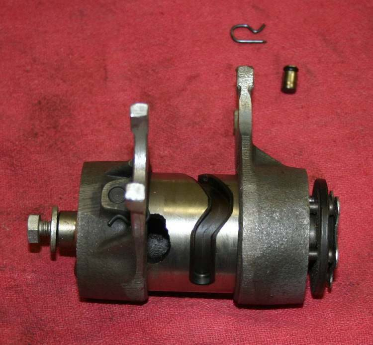
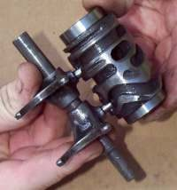
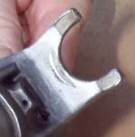

Inside the gearbox, the shift drum is a short cylinder with curved grooves cut around it. Each groove holds a shift fork. When the drum turns a small step, the forks slide sideways and move gears on the shafts in and out of engagement. This is how the gear lever selects 1st, 2nd, 3rd and neutral.
What it does
The gears in a motorcycle gearbox are always in mesh, so there is no need for synchronisers. Only the gears with dogs (the knobs on their sides) are moved by the forks, and each fork moves one gear or gear pair. Some drums carry the forks on the drum itself, and some use separate fork shafts. A few old designs use a flat cam plate with grooves instead of a drum. A shift pawl turns the drum and a spring-loaded stopper holds it in each position.
Signs it is worn or failing
- Jumps out of gear under power. The course says that if the box wants to jump out, usually second, look at the dogs, the holes they fit in and the sides of the forks. Any wear on these parts means replacement.
- False neutrals or hard gear changes.
- A shift fork with a bent arm or a worn, shiny tip, or a groove with a ridge.
- Metal particles in the oil.
When to replace it
Replace a fork that is bent or worn at the tip. Replace a drum if its grooves are worn, ridged or cracked. If you fit a new fork, check the mating gear groove too, as an old gear with a worn groove will wear a new fork quickly.
What to match when buying
- Engine model and year. Forks are often not interchangeable between left, centre and right positions, so match the marks on the old ones.
- Buy a drum, forks, pins and the stopper wheel or plunger as a set if the bike has done high mileage.
Fitting notes
- Workshop job. The crankcase must be opened on most engines. See Assess internal gearbox faults and Inspect the shift drum and forks.
- Put everything back in exactly the same position as it came out. Mark the parts or lay them in an egg crate in order.
- Shims (thin washers) at the ends of shafts position the gears. They tend to stick to bearings, so look for them.
- After assembly, spin the shafts by hand while changing through the gears. A slightly stiff or chunky change on a new gearbox is normal; a gear that will not go in is not.